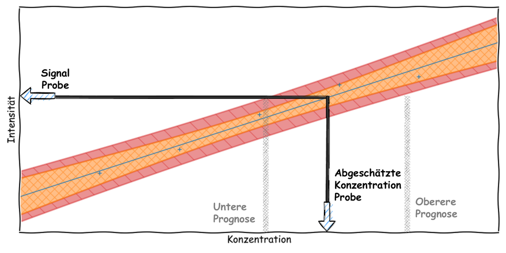

Statistische Auswertung Analytischer Messergebnisse
Praktikum in der AnalytikWarum Analytik?
Qualitative Analytik z.B. Chromatographie
zu welchem Peak?
Qualitative Analytik z.B. Chromatographie
# 2-3x Menge
# Identifizierung über Signalerhöhung
Qualitative Analytik z.B. Spektroskopie
hinter diesem Spektrum?
Qualitative Analytik z.B. Spektroskopie
# Hit Quality Index
Quantitative Analytik
Quantitative Analytik Übersicht
in der Analytik
Externe Kalibration
Interner Standard
# messtechnisch unterscheidbar
# chemisch ähnlich
Standardaddition
Methoden der Quantifizierung Auswertung
Lineare Regression
Lineare Regression Kenngrößen
Lineare Regression Theorie
\[ \hat{y} = \sum_{i=1}^{n} a_i \cdot x_i + b \]
\[ \hat{y} = m \cdot x + b \]
\[ \hat{y} = a \cdot x^2 + b \cdot x + c \]
Ziel: Bestimmung der Ausgleichsgeraden, die die Residuenquadrate minimiert.
Ansatz: Minimierung der Funktion der Fehlerquadrate: \[ \text{RSS} = \sum_{i=1}^{n} (y_i - (m \cdot x_i + b))^2 \]
Berechnung: Ableitungen nach \( m \) und \( b \) setzen:
\[ \frac{\partial \text{RSS}}{\partial m} = 0 \quad \text{und} \quad \frac{\partial \text{RSS}}{\partial b} = 0 \]
Durch Lösen dieser Gleichungen finden wir die Werte für \( m \) und \( b \), die die Summe der Fehlerquadrate minimieren und so die beste Anpassung liefern.

Lineare Regression Matrixlösung
Die Berechnung der optimalen Werte für \( m \) und \( b \) kann effizient mit Matrizen durchgeführt werden:
Ziel: Finde die Lösung für die Gleichung \[ \mathbf{\hat{y}} = \mathbf{X} \cdot \mathbf{b} \]
Damit sind die Fehlerquadrate definiert als: \[ \text{RSS} = (\mathbf{y} - \mathbf{X} \cdot \mathbf{b})^T \cdot (\mathbf{y} - \mathbf{X} \cdot \mathbf{b}) \]
Dies wird nun nach \( \mathbf{b} \) abgeleitet und gleich Null gesetzt: \[ \frac{\partial \text{RSS}}{\partial \mathbf{b}} = -2 \cdot \mathbf{X}^T \cdot (\mathbf{y} - \mathbf{X} \cdot \mathbf{b}) = 0 \]
Die Lösung ist dann: \[ \mathbf{b} = (\mathbf{X}^T \cdot \mathbf{X})^{-1} \cdot \mathbf{X}^T \cdot \mathbf{y} \]
Lineare Regression Beipsiel
Gib die Konzentrationswerte in die Tabelle ein und starte die Messung.
| Konzentration (mg/L) | Signal |
|---|---|
| 0.0 | |
| 0.0 | |
| 0.0 | |
| 0.0 | |
| 0.0 |
Designmatrix \(\mathbf{X}\):
Pseudo Inverse \( (\mathbf{X}^T \cdot \mathbf{X})^{-1} \cdot \mathbf{X}^T \):
Koeffizienten \(\mathbf{b}\):
Die Normalverteilung
Lineare Regression Unsicherheiten
Unsicherheiten der Regreressionsparameter
Lineare Regression Kenngrößen 2
Methodenvergleich
Lineare Regression Vertrauensband und Prognoseinterval
Lineare Regression Vertrauensband und Prognoseinterval
Vertrauensband (VB):
Abschätzung der Kalibriergeraden-Schar auf Basis der Streuung der Residuen.
Prognoseintervall (PI):
Da die Probe nicht Teil der Kalibriergeraden ist, muss eine größere Unsicherheit angenommen werden. Diese ist ebenfalls von der Streuung der Residuen abhängig.
Konzentration ablesen & berechnen
Grundkonzept der Nachweisgrenze

Abschätzung der Nachweisgrenze
Bestimmungsgrenze
Konzentration mit vorher definierter maximal zulässiger relativer Unsicherheit: z.B. 33%
z.B. 15 mg/L ± 5 mg/L \[ PI = \hat{y}\pm t\left(\alpha,f\right)\sqrt{s_y^2+\left(\mathbf{xC}\bullet\mathbf{x}\right)\mathbf{1}} \]
Wie Verbessern wir NWG und BG?
Mehr Messungen: reduziert t-Wert
Präzieseres Handling: reduziert \(s_y\)
Empfindlichere Detektion: reduziert \(\mathbf{C}\)
Unsicherheiten von Messergebnissen
Messergebnis zu wahrem Wert
Prognoseintervall
abgeschätzt werden